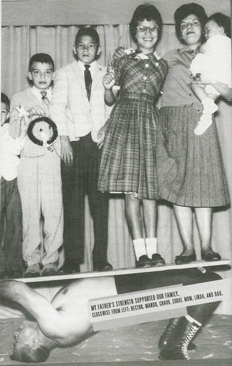
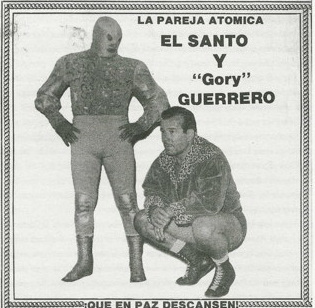

Глава 1
Перевод Александра Суменко для VSplanet.net
Мой отец, Сальвадор Герреро Кесада, родился 11 января 1921 года в уже не существующем городе Рэй, штат Аризона. Там когда-то был большой медный рудник, который вырос до таких размеров, что всем жителям города пришлось переехать оттуда.

Сила моего отца поддерживала всю нашу семью. Слева, по часовой стрелке: Эктор, Мандо, Чаво, Куки, мама, Линда и папа.
Как и множество иммигрантов из Мексики, мои дедушка и бабушка считались трудовыми мигрантами. Они путешествовали от фермы к ферме, собирая фрукты и овощи по всему юго-западу и Калифорнии. Это была (хотя это так и до сих пор) очень тяжелая жизнь.
Мой отец ходил в американскую школу до 9 лет. Когда его мать погибла от воспаления легких, дед решил вернуться в Мексику.
Благодаря отличному знанию английского мой папа зарабатывал деньги, работая переводчиком в Гвадалахаре. Когда ему было 16, его отца насмерть сбила машина, водитель которой скрылся с места происшествия. Будучи старшим сыном в семье, мой отец должен был воспитывать брата и четырех сестер.
Папе всегда нравился спорт, и он решил записаться в тренажерный зал Гвадалахары, чтобы научиться боксировать. Но он не знал, что в том зале учили не боксу, а луча-либре.
Он сразу влюбился в рестлинг. Его тренерами были два местных лучадора — Диабло Веласко и Эль Индио Мехиа. Первый матч моего отца состоялся 14 сентября 1937 года, он сделал джоб (то есть, проиграл) парню по имени Эль Рохо на арене Nilo в Гвадалахаре. За это он получил 15 сентаво.
Отец ухватился за свои американские корни и начал выступать в Мексике под именем Джо Морган. Вскоре он возненавидел это имя и стал придумывать для себя новое. Он хотел использовать свое настоящее имя, но считал, что имя Сальвадор недостаточно привлекательно. Поскольку у него уже была репутация проведения кровавых матчей, он стал называть себя Гори Герреро [прим. пер.: англ. Gory — кровавый].
Люди мгновенно обратили на него внимание. Он увлекался бодибилдингом и обладал превосходно развитым телом. Более того, он развил агрессивный стиль рестлинга, что сделало его одним из лучших хилов в индустрии. Из-за тяжелой жизни внутри него постоянно кипел гнев. Он вымещал всю злобу в ринге, за что фанаты прозвали его «El Ave de las Tempestades» — Буревестник.
В 1943 году мой отец подписал договор с компанией EMLL (Empresa Mexicana de Lucha Libre), которая в те годы была мексиканским аналогом современной World Wrestling Entertainment. Сальвадор Люттерот, стоявший за EMLL, по сути, контролировал всю систему рестлинга в Мексике. В тот год отец получил почетную награду «Дебютант года», хотя к тому времени он уже имел опыт в профессиональном рестлинге.
Спустя два года он выиграл свой первый пояс — национального чемпиона в полусреднем весе — хотя он даже не попадал в эту весовую категорию! Они, очевидно, поняли, что допустили ошибку, потому что он проиграл пояс достаточно быстро. Спустя пару месяцев папа выиграл пояс национального чемпиона в среднем весе, который продержал около года. С той поры он выиграл несколько мировых чемпионств, включая пояса чемпиона мира NWA в среднем и полутяжелом весах.
В 1954 году мой отец получил право боя с чемпионом мира NWA в тяжелом весе, легендарным Лу Тезом. Пояс он не выиграл, но это был очень значимый матч. Мексиканские рестлеры редко получали возможность бороться за самые престижные титулы в индустрии, так что сам факт назначения матча показывал, какое уважение к отцу имела комиссия NWA.
Отец стал звездой, потому что был непревзойденным хилом. Из-за нелегкого детства в нем было много ненависти, которую он направлял в ринг. Зрители чувствовали бурлящую в нем агрессию. Люди ненавидели его, что иногда приводило к бунтам. Если фанат бросал отцу вызов, тот выпрыгивал за ринг, смотрел парню в глаза, а потом сбивал с ног. Никто не успевал глазом моргнуть, как он уже дрался со всеми окружающими.
Отец, возможно, был самым жестким хилом в луча-либре, но при этом утонченным человеком и модником. Всегда ухоженный, он носил стильные костюмы и галстуки.
Отец был особенно придирчив к чистоте своего костюма. Он даже стирал шнурки после каждого матча. Если вы посмотрите записи матчей моего отца, то можете увидеть, что его шнурки даже белее ринга!
Карьера отца взлетела ввысь во время фьюда с Кавернарио Галиндо. Их матчи каждый раз оборачивались кровавой баней, что было совершенно необычно для того времени. Люди до сих пор обсуждают их бойню без дисквалификаций и отсчетов. Она была настолько жестокой, что папу отвезли в больницу сразу после окончания матча — он потерял много крови. Матчи Герреро против Галиндо были настолько успешны, что промоутеры принялись подражать им, заставляя своих рестлеров пускать кровь, словно на алтаре жертвоприношений.
В конце 40-х годов мой отец образовал команду «La Pareja Atomica» (Атомная пара) с единственным и неповторимым Эль Санто. Они идеально подходили друг другу. Мой папа был техничным рестлером, а Санто — шоуменом и броулером. «La Pareja Atomica» была невероятно успешной командой и оставалась самой популярной командой в Мексике, пока они выступали вместе. На самом деле, они не проиграли ни одного матча.
Никого не окружал столь мощный ореол таинственности, как Эль Санто. Никто никогда не соблюдал кейфейб на таком уровне, как он. Он внимательно следил, чтобы никто не увидел его без серебряной маски. Никто не знал, кто он такой, даже другие рестлеры.
Санто был настоящим первооткрывателем. Когда он начинал, рестлеров в маске можно было пересчитать по пальцам. Теперь же почти каждый лучадор выступает в маске. Маски являются атрибутом иллюзиона луча-либре. Люди реагируют на них, потому что маски создают загадочность. Это способ превратить рестлеров в супергероев. Так создаются легенды.
Сложно описать, насколько популярен был Санто в Мексике. Он был героем. Не думаю, что хоть кто-то в Мексике не знал, кто он такой. Назвать его легендой, значит, не сказать ничего. На пике популярности Санто был круче Халка Хогана и «Ледяной Глыбы» Стива Остина вместе взятых.

La Pareja Atomica — лучшая команда в луча-либре
Санто был не просто рестлером. Он был реальным супергероем, про которого сочиняли комиксы и сняли более 50 фильмов с названиями типа «Санто против Вампирши» и «Санто против Марсианского вторжения». Бюджеты фильмов были низкими, но они были невероятно популярны. Мой папа появился в паре фильмов о Санто, но ему не нравились съемки. Его занимал только рестлинг.
Отец гордился и развивал свою техническую подготовку. Люди используют слово «первопроходец» очень свободно, но мой папа действительно таковым являлся. Он придумал как минимум два приема, получивших всемирную популярность: «Кэмел-клатч» и болевой прием на шею из позиции спина к спине, который он называл «Gory Special».
Кэмел-клатч, «La de a caballo», — это болевой прием, когда исполняющий садится на спину противника, потом фиксирует его руки у себя на коленях, а затем хватает его за подбородок и тянет на себя, растягивая его шею, руки и туловище. Папа начал использовать Кэмел-клатч, когда выступал в команде с Санто, которому прием понравился настолько, что он попросил отдать его ему. Естественно, отец согласился, и Санто использовал этот прием до конца своей карьеры.
Но папа никому не отдавал «Gory Special». Его время от времени используют члены семьи Герреро. Я тоже иногда применяю «Gory Special», но стараюсь беречь его для особых случаев.
Одним из самых успешных фьюдов моего отца было противостояние с Энрике Льянесом, который выступал с Тарзаном Лопесом в команде «La Pareja Ideal». Однажды вечером Энрике пригласил отца на ужин и познакомил со своей семьей.
Мой отец и сестра Энрике, Эрлинда, быстро нашли общий язык. После ужина мой папа попросил у Энрике разрешение на свидание с Эрлиндой. Остальное, как говорится, вы знаете.
Моя мама выросла в Мехико, но родилась она в городе Пуэбло, расположенном рядом с ацтекскими пирамидами. До рождения моей мамы ее отец работал телеграфистом у генерала Эмильяно Сапаты, одного из лидеров мексиканской революции. Он был двойным агентом — официально работал на правительство, но передавал секретную информацию революционерам.
В конце концов, правительство раскрыло моего деда и приговорило к казни через расстрел. Когда расстрельная команда приготовилась стрелять, моя бабушка и трое их детей закрыли его своими телами.
— Если хотите убить его, убейте всех нас, — сказала она, глядя в глаза палачам. — Я не буду жить без него.
Невероятно, но команданте пожалел их и отпустил моего деда. Его избили до полусмерти, но не убили. Это хорошая новость для меня — если бы его не отпустили, не было бы «Латинской жары»!
Потом у них родилось много детей, а моя мама была предпоследней. После революции новое правительство позаботилось о моем дедушке, и он смог достойно выйти на пенсию.
Эрлинда Льянес и Гори Герреро женились в 1947 году и сразу начали производить на свет потомство. Первой была моя сестра Мария, которую все называют Куки. Год спустя появился Сальвадор-младший, более известный как Чаво. Потом Армандо (или Мандо), а за ним — Эктор и Линда. И последний по старшинству, но не по значению был искренне ваш, Эдуардо Гори Герреро Льянес.
В 1966 году папа решил избежать повсеместного влияния Люттерота и EMLL. К тому времени он уже три года владел поясом мирового чемпиона NWA в полутяжелом весе, это самый престижный титул в луча-либре. Люттерот хотел, чтобы мой отец проиграл титул Рею Мендосе таким путем, какой папа посчитал вредным для бизнеса. Вместо того чтобы последовать указаниям, отец взбунтовался, ушел из EMLL и забрал пояс с собой.
Он поселился в Эль-Пасо и начал работать по штатам, в основном, в Лос-Анджелесе, обеих Каролинах и Техасе. Он даже провел пару матчей в старой World Wide Wrestling Federation Винса МакМэна-старшего. Естественно, он продолжал выступления и в Мексике, выступая в пограничных городах, таких как Хуарес и Тихуана.
Становясь старше, отец уменьшал проведенное на ринге время и концентрировался на тренировках молодежи и совместной работе с промоутером Дори Фанком-старшим. Они вместе работали по всему западному Техасу: Эль-Пасо, Амарильо и другие города.
Когда Дори погиб, папа продолжил делать шоу, в основном, в Хуаресе, с участием рестлеров, которых он сам тренировал, вроде моих братьев Чаво и Эктора, а также таких легенд, как Эль Санто и Бадди Роджерс-младший.
Даже в старости весь мир моего отца вращался вокруг рестлинга. Стоит ли говорить, что именно в этом мире родился и вырос я.